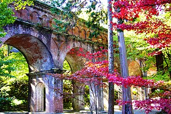
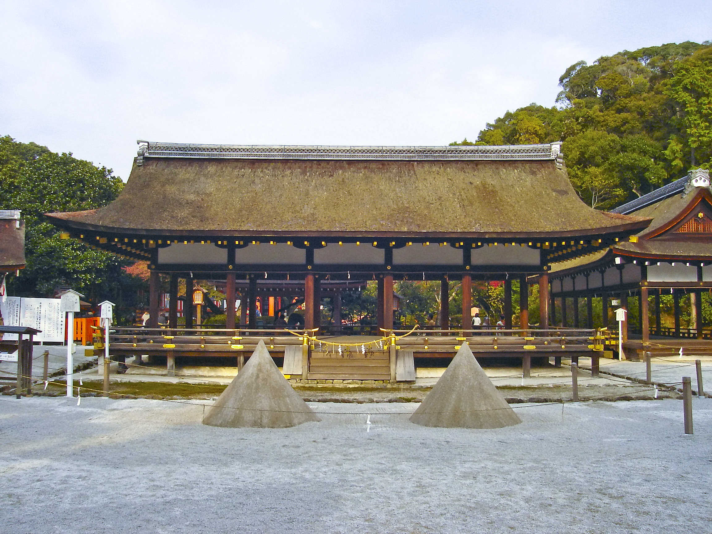

Kyoto
About
Kyoto (/ˈkjoʊtoʊ/;[3] Japanese: 京都, Kyōto [kʲoꜜːto] ⓘ), officially Kyoto City (京都市, Kyōto-shi, [kʲoːtoꜜɕi] ⓘ), is the capital city of Kyoto Prefecture in the Kansai region of Japan's largest and most populous island of Honshu. As of 2020, the city had a population of 1.46 million, making it the ninth-most populous city in Japan. More than half (56.8%) of Kyoto Prefecture's population resides in the city. The city is the cultural anchor of the substantially larger Greater Kyoto, a metropolitan statistical area (MSA) home to a census-estimated 3.8 million people. It is also part of the even larger Keihanshin metropolitan area, along with Osaka and Kobe.
History
Osaka has a large number of wholesalers and retail shops: 25,228 and 34,707 respectively in 2004, according to the city statistics.[80] Many of them are concentrated in the wards of Chuō (10,468 shops) and Kita (6,335 shops). Types of shops vary from malls to conventional shōtengai shopping arcades, built both above- and underground.[81] Shōtengai are seen across Japan, and Osaka has the longest one in the country.[82] The Tenjinbashi-suji arcade stretches from the road approaching the Tenmangū shrine and continues for 2.6 km (1.6 miles) going north to south. The stores along the arcade include commodities, clothing, and catering outlets. Other shopping areas include Den Den Town, the electronic and manga/anime district, which is comparable to Akihabara; the Umeda district, which has the Hankyu Sanbangai shopping mall and Yodobashi Camera, a huge electrical appliance store that offers a vast range of fashion stores, restaurants, and a Shonen Jump store. Osaka is known for its food, in Japan and abroad. Author Michael Booth and food critic François Simon of Le Figaro have suggested that Osaka is the food capital of the world.[83] Osakans' love for the culinary is made apparent in the old saying "Kyotoites are financially ruined by overspending on clothing, Osakans are ruined by spending on food."[84]
Culture
Although ravaged by wars, fires, and earthquakes during its eleven centuries as the imperial
capital,[citation needed] Kyoto suffered only minor damage in World War II. Kyoto remains Japan's
cultural center.[43][44] About 20% of Japan's National Treasures and 14% of Important Cultural
Properties exist in the city proper. The government of Japan relocated the Agency for Cultural Affairs
to Kyoto in 2023.[45]
With its 2,000 religious places – 1,600 Buddhist temples and 400 Shinto
shrines, as well as palaces,
gardens and architecture intact – it is one of the best preserved cities in Japan. Among the most famous
temples in Japan are Kiyomizu-dera, a magnificent wooden temple supported by pillars off the slope of a
mountain; Kinkaku-ji, the Temple of the Golden Pavilion; Ginkaku-ji, the Temple of the Silver Pavilion;
and Ryōan-ji, famous for its rock garden. The Heian Jingū is a Shinto shrine, built in 1895, celebrating
the imperial family and commemorating the first and last emperors to reside in Kyoto. Three special
sites have connections to the imperial family: the Kyoto Gyoen area including the Kyoto Imperial Palace
and Sentō Imperial Palace, homes of the emperors of Japan for many centuries; Katsura Imperial Villa,
one of the nation's finest architectural treasures; and Shugakuin Imperial Villa, one of its best
Japanese gardens. In addition, the temple of Sennyu-ji houses the tombs of the emperors from Shijō to
Kōmei.
Architecture
Although ravaged by wars, fires, and earthquakes during its eleven centuries as the imperial capital,[citation needed] Kyoto suffered only minor damage in World War II. Kyoto remains Japan's cultural center.[43][44] About 20% of Japan's National Treasures and 14% of Important Cultural Properties exist in the city proper. The government of Japan relocated the Agency for Cultural Affairs to Kyoto in 2023.[45]Three special sites have connections to the imperial family: the Kyoto Gyoen area including the Kyoto Imperial Palace and Sentō Imperial Palace, homes of the emperors of Japan for many centuries; Katsura Imperial Villa, one of the nation's finest architectural treasures; and Shugakuin Imperial Villa, one of its best Japanese gardens. In addition, the temple of Sennyu-ji houses the tombs of the emperors from Shijō to Kōmei.Three special sites have connections to the imperial family: the Kyoto Gyoen area including the Kyoto Imperial Palace and Sentō Imperial Palace, homes of the emperors of Japan for many centuries; Katsura Imperial Villa, one of the nation's finest architectural treasures; and Shugakuin Imperial Villa, one of its best Japanese gardens. In addition, the temple of Sennyu-ji houses the tombs of the emperors from Shijō to Kōmei.
